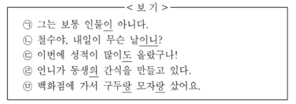

!DOCTYPE html>
문학 모이고사 1~20
지문 보기(문제8~문제10)

11. 윗글을 바탕으로 <보기>의 ㉠ ~ ㉤을 탐구한 내용으로 적절하지 않은 것은?
1. ㉠의 '이'는 체언인 '인물'에 붙어 주어의 자격을 갖게 한다.
2. ㉡의 '이니'는 체언인 '날'에 붙어 서술어의 자격을 갖게 한다.
3. ㉢의 '도'는 부사인 '많이'에 붙어 특별한 의미를 더해 주는 구실을 한다.
4. ㉣의 '의'는 체언인 '동생'에 붙어 관형어의 자격을 갖게 한다.
5. ㉤의 '랑'은 '구두'와 '모자'를 같은 자격으로 이어주는 역할을 한다.